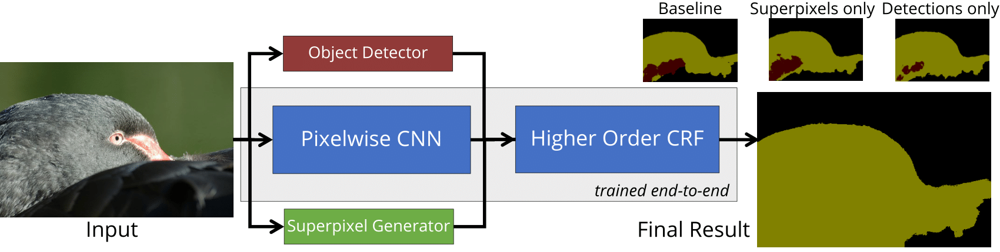

Abstract: We address the problem of semantic segmentation using deep learning. Most segmentation systems include a Conditional Random Field (CRF) to produce a structured output that is consistent with the image's visual features. Recent deep learning approaches have incorporated CRFs into Convolutional Neural Networks (CNNs), with some even training the CRF end-to-end with the rest of the network. However, these approaches have not employed higher order potentials, which have previously been shown to significantly improve segmentation performance. In this paper, we demonstrate that two types of higher order potential, based on object detections and superpixels, can be included in a CRF embedded within a deep network. We design these higher order potentials to allow inference with the differentiable mean field algorithm. As a result, all the parameters of our richer CRF model can be learned end-to-end with our pixelwise CNN classifier. We achieve state-of-the-art segmentation performance on the PASCAL VOC benchmark with these trainable higher order potentials.
